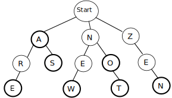
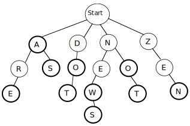
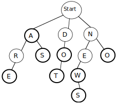

CSCI 136 :: Spring 2021
Data Structures & Advanced Programming
Home | Schedule | Labs | Handouts | Links | CS@Williams
Lab 8: Super Lexicon
Virtually all modern word processors contain a feature to check
the spelling of words in documents.
More advanced word processors also provide suggested corrections
for misspelled words.
In this lab, you will be taking on the fun and challenging task of
implementing such a spelling corrector.
You are to implement a highly-efficient Lexicon class.
This lab has optional assignments that implement additional functionality like finding spelling
corrections for misspelled words.
The assignment has several purposes:
• To gain further skill with recursion in managing a
recursive tree structure and exploring it efficiently
• To explore the notion of a layered abstraction where
one class (Lexicon) makes use of other classes
(e.g., Iterator, Vector, Set)
as part of its internal representation.
Pre-lab
Before lab, please do the following:
The Lexicon Interface
Your first task is to write a basic class that implements the Lexicon interface. The Lexicon interface describes the functionality necessary to support required operations that include:
and, if you're keen, the optional operations
Historical Footnote: Back in the ancient times, cell-phones lacked the memory and processsing power necessary to support the elaborate text messaging apps found on modern smartphones. Instead of auto-completing words based on a message's content or correcting a message's grammar mistakes, the "spell-checking" functionality was limited. In this lab, you'll get a chance to build a lexicon yourself to see the kind of specialized and highly-efficient data structures that were used in its implementation.
You should implement the Lexicon interface in a file called LexiconTrie.java. This class will use the LexiconNode class, which you are responsible for designing and implementing. The following methods are in the Lexicon interface.
public interface Lexicon {
boolean addWord(String word);
boolean removeWord(String word);
boolean containsWord(String word);
boolean containsPrefix(String prefix);
int addWordsFromFile(String filename);
int numWords();
Iterator<String> iterator();
Set<String> suggestCorrections(String target, int maxDistance);
Set<String> matchRegex(String pattern);
}
Most of the method behaviors can be inferred from their names and return types. For more information about the usage and purpose of these methods, refer to the comments in the starter code.
The addWordsFromFile(String filename) method requires reading input in from a file. This can be done with the structure5 Filestream class. After setting up a Scanner as follows for a file with name filename, the scanner can be used as normal to obtain the contents of the file (i.e. with sc.hasNextLine() and sc.nextLine()):
Scanner sc = new Scanner(new FileStream(filename));
Implementing the Lexicon as a Trie
There are several different data structures you could use to implement a lexicon: a sorted array, a linked list, a binary search tree, and many others. Each of these offers tradeoffs between the speed of word and prefix lookup, the amount of memory required to store the data structure, the ease of writing and debugging the code, the performance of add/remove, and so on. The implementation we will use is a special kind of tree called a trie (pronounced "try"), designed for just this purpose.
A trie is a letter-tree that efficiently stores strings. A node in a trie represents a letter. A path through the trie traces out a sequence of letters that represent a prefix or word in the lexicon.
Instead of just two children as in a binary tree, each trie node has potentially 26 child references (one for each letter of the alphabet). Whereas searching a binary search tree eliminates a single subtree of words with each left or right turn, a search in a trie follows the child reference for the next letter, which narrows the search to just words starting with that letter. For example, from the root, any words that begin with "n" can be found by following the reference to the "n" child node. From there, following "o" leads to just those words that begin with "no" and so on, recursively. If two words have the same prefix, they share that initial part of their paths. This saves space since there are typically many shared prefixes among words. Each node has a boolean isWord flag which indicates that the path taken from the root to this node represents a complete word. Here's a conceptual picture of a small trie:
The thick border around a node indicates that its isWord flag is true. This trie contains the words: a, are, as, new, no, not, and zen. Strings such as ze or ar are not valid words for this trie because the path for those strings ends at a node where isWord is false. Any path not drawn is assumed to not exist, so strings such as cat or astronaut are not valid because there is no such path in this trie.
Like other trees, a trie is a recursive data structure. All of the children of a given trie node are themselves smaller tries. You will be making good use of your recursion skills when operating on the trie!
For each node in the trie, you need a list of children nodes. In the sample trie drawn above, the root node has three children, one each for the letters A, N, and Z. One possibility for storing the children is a statically-sized 26-member array of nodes, where array[0] is the child for A, array[1] refers to B, ... and array[25] refers to Z. When there is no child for a given letter, (such as from Z to X) the array entry would be null. This arrangement makes it trivial to find the child for a given letter:you simply access the correct element in the array by letter index.
However, for most nodes within the trie, very few of the 26 references are needed, so using a largely null 26-member array is much too memory-intensive (i.e., it wastes a lot of space). Better alternatives would be a dynamically-sized array which can grow and shrink as needed (i.e., a Vector), or a linked list of children nodes. We leave the final choice of a space-efficient design up to you, but you should justify the choice you make (briefly) in your program comments. Two things you may want to consider:
Developing an Implementation Strategy
Begin implementing your trie by constructing a LexiconNode class. LexiconNodes should be comparable, so make sure to implement the Comparable interface. Be sure to incrementally compile and test this code.
Create a constructor in LexiconTrie that creates an empty LexiconTrie to represent an empty word list. Test (using the main method of LexiconTrie) your constructor.
Provided in the starter repository is a class called Main.java, which provides a command-line based user interface. You can use this class to test your LexiconTrie as you incrementally develop it. A suggested order of implementation is reflected below.
Adding Words
Adding a new word into the trie with addWord is a matter of tracing out its path starting from the root, as if searching. If any part of the path does not exist, the missing nodes must be added to the trie. Lastly, the isWord flag is turned on for the final node. In some situations, adding a new word will necessitate adding a new node for each letter, for example, adding the word dot to our sample trie will add three new nodes, one for each letter. On the other hand, adding the word news would only require adding an s child to the end of existing path for new. Adding the word do after dot has been added doesn't require any new nodes at all; it just sets the isWord flag on an existing node to true. Here is the sample trie after those three words have been added:
A trie is an unusual data structure in that its performance can improve as it becomes more loaded. Instead of slowing down as its get full, it becomes faster to add words when they can share common prefix nodes with words already in the trie.
Suggestion:At this point, you might consider whether it would be helpful to be able to print out some kind of representation of your LexiconTrie to ensure that it has the contents and structure you intend it to have!
Searching for Words and Prefixes
Searching the trie for words and prefixes using containsWord and containsPrefix is a matter of tracing out the path letter by letter. Let's consider a few examples on the sample trie shown previously. To determine if the string new is a word, start at the root node and examine its children to find one pointing to n. Once found, recurse on matching the remainder string ew. Find e among its children, follow its reference, and recurse again to match w. Once we arrive at the w node, there are no more letters remaining in the input, so this is the last node. The isWord field of this node is true, indicating that the path to this node is a word contained in the lexicon.
Alternatively, search for ar. The path exists and we can trace our way through all letters, but the isWord field on the last node is false, which indicates that this path is not a word. (It is, however, a prefix of other words in the trie). Searching for nap follows n away from the root, but finds no a child leading from there, so the path for this string does not exist in the trie and it is neither a word nor a prefix in this trie (containsWord and containsPrefix both return false).
All paths through the trie eventually lead to a valid node (a LexiconNode where isWord has value true). Therefore determining whether a string is a prefix of at least one word in the trie is simply a matter of verifying that the path for the prefix exists.
Removing Words
The first step to removing a word with removeWord is tracing out its path and turning off the isWord flag on the final node. However, your work is not yet done because you should remove any node along that path that no longer leads to a word. The removal of such nodes is left as an optional extension, described in the next paragraph. For this lab, you only need to update the isWord flag for full credit.
Optional extension. All paths in the trie must eventually lead to a word. If the word being removed was the only valid word along this path, the nodes along that path should be deleted from the trie along with the word. For example, if you removed the words zen and not from the trie shown previously, you should have the result below.
Deleting unneeded nodes requires care because of the recursive nature of the trie. Think about how we removed the last element of a SinglyLinkedList (Chapter 9.4 in Bailey). We had to maintain a reference to the second to last element to update the references appropriately. The situation is similar here.
As a general observation, there should never be a leaf node whose isWord field is false. If a node has no children and does not represent a valid word (i.e., isWord is false), then this node is not part of any path to a valid word in the trie and such nodes should be deleted when removing a word. In some cases, removing a word from the trie may not require removing any nodes. For example, if we were to remove the word new from the above trie, it turns off isWord but all nodes along that path are still in use for other words.
Important note: when removing a word from the trie, the only nodes that may require removal are nodes on the path to the word that was removed. It would be extremely inefficient to check additional nodes that are not on the path.
Other Required Trie Operations
There are a few remaining odds and ends to the trie implementation:
Optional Extensions
Once you have a working lexicon and iterator method, you're ready to implement snazzy spelling correction features. In addition to the previously mentioned removal of nodes that are no longer parts of words, there are two additional extensions that you could attempt to implement. These extensions are "just for fun" and do not affect your lab grade. They are the two Lexicon member functions for suggesting simple corrections and for regular expressions matching:
Sets are basically just fancy Vectors that do not allow duplicates. Check out the javadocs on Sets and SetVectors in structure5 for more information.
Suggesting Corrections:
First consider the member function suggestCorrections. Given a (potentially misspelled) target string and a maximum distance, this function gathers the set of words from the lexicon that have a distance to the target string less than or equal to the given maxDistance. We define the distance between two equal-length strings to be the total number of character positions in which the strings differ. For example, "place" and "peace" have distance 1, "place" and "plank" have distance 2. The returned set contains all words in the lexicon that are the same length as the target string and are within the maximum distance.
For example, consider the original sample trie containing the words a, are, as, new, no, not, and zen. If we were to call suggestCorrections with the following target string and maximum distance, here are the suggested corrections:
| Target String | Max Distance | Suggested Corrections |
|---|---|---|
| ben | 1 | {zen} |
| nat | 2 | {new, not} |
For a more rigorous test, we also provide the word file ospd2.txt, which lists all of the words in the second edition of the Official Scrabble Player's Dictionary. Here are a few examples of suggestCorrections run on a lexicon containing all the words in ospd2.txt:
| Target String | Max Distance | Suggested Corrections |
|---|---|---|
| crw | 1 | {caw, cow, cry} |
| zqwp | 2 | {gawp, yawp} |
Finding appropriate spelling corrections will require a recursive traversal through the trie gathering those "neighbors" that are close to the target path. You should not find suggestions by examining each word in the lexicon and seeing if it is close enough. Instead, think about how you can generate candidate suggestions by traversing the path of the target string taking small "detours" to the neighbors that are within the maximum distance.
Matching Regular Expressions:
The second optional extension is to use recursion to match regular expressions. The matchRegex method takes a regular expression (as defined below) as input and gathers the set of lexicon words that match that regular expression.
If you have not encountered them before, a regular expression describes a string-matching pattern. Ordinary alphabetic letters within the pattern indicate where a candidate word must exactly match. The pattern may also contain "wildcard" characters, which specify how and where the candidate word is allowed to vary. For now, we will consider a subset of wildcard characters that have the following meanings:
For example, consider the original sample trie containing the words a, are, as, new, no, not, and zen. Here are the matches for some sample regular expressions:
| Regular Expression | Matching Words from Lexicon |
|---|---|
| a* | {a, are, as} |
| a? | {a, as} |
| *e* | {are, new, zen} |
| not | {not} |
| z*abc?*d | {} |
| *o | {no} |
Finding the words that match a regular expression will require applying your finest recursive skills. You should not find suggestions by examining each word in the lexicon and seeing if it is a match. Instead, think about how to generate matches by traversing the path of the pattern. For non-wildcard characters, it proceeds just as for traversing ordinary words. On wildcard characters, "fan out" the search to include all possibilities for that wildcard.
Suggestions
Thought Questions
Please answer the following questions in the PROBLEMS.md file.
Completing the Lab
We provide basic starter code for this assignment. The lexicon directory contains the following files:
checkstyle requirements:
For this lab, we will be not be adding any
new checkstyle rules to the set of rules that we
have used in previous weeks.
We STRONGLY ENCOURAGE you to run checkstyle early and often when developing your code, and try to program in a way that minimizes WARNING messages. The checkstyle rules that we use in this course are based on real-world style guides; internalizing good style practices will help us write more readable code.
In total, checkstyle will enforce the following guidelines:
final must be
declared private or protected (i.e.,
no public member variables unless they are
constants). (We don't expect this to be an issue this week.)
public methods must include a “Javadoc” comment
(starts with /** and ends with */;
it should include descriptions of the function at the top,
descriptions of return values after a @return tag,
descriptions of each argument after a @param tag,
and pre/post conditions after the @pre
or @post tags).
To run checkstyle, you would type the following
command at the terminal:
$ ./checkstyle
The ./ is peculiar to Unix: it tells the terminal
to look for the checkstyle program in the current
directory. This command will run checkstyle on
every Java program in your directory. To
run checkstyle on a specific Java file, type:
$ ./checkstyle SomeFile.java
Lab Deliverables
For this lab, please submit the following:
As in all labs, you will be graded on design, documentation, style, and correctness. Be sure to document your program with appropriate comments, including a general description at the top of each Java class, a description of each method with pre- and post-conditions where appropriate. Also use comments and descriptive variable names to clarify sections of the code which may not be clear to someone trying to understand it.
Submitting Your Lab
As you complete various milestones, you should commit your changes and push them. Commit early and often. When the deadline arrives, we will retrieve the latest version of your code. If you are confident that you are done, please include "Lab Submission" as the commit message for your final commit. If you later decide that you have more edits to make, it is OK. We will look at the latest commit before the deadline.
We will know that the files are yours because they are in your git repository. Do not include identifying information in the code that you submit. Our goal is to grade the programs anonymously to avoid any bias. However, in your README.md file, please cite any sources of inspiration or collaboration (e.g., conversations with classmates). We take the honor code very seriously, and so should you. Please include the statement "I am the sole author of the work in this repository" in the comments at the top each of your java files.